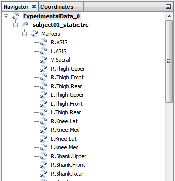
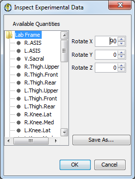

Motion capture data can be previewed in OpenSim to verify that preprocessing was done correctly and that data is in agreement with the intended model. See Preparing Your Data for more information about how to import your data into OpenSim. In some cases, you can also use OpenSim's feature for Associating Data with a Motion. For example, if you've already run IK and you want to visualize marker data or ground reaction forces in sync with the inverse kinematics trial you should use the Associate Data motion feature.
If you have multiple files representing different pieces of data, this tool allows you to verify that the data was transformed consistently. Since the goal is to ensure that the data is consistent with an OpenSim model for further analysis, this module handles data files in the format accepted by OpenSim tools. The two types of data currently handled are marker trajectories (contained in .trc files) and measured forces (contained in .mot files), described earlier. The topics covered in this section include:
Using the Data Previewer
To choose the motion capture data file to be visualized, select Preview Experimental Data… from the File menu (Preview Motion Data in 3.0.1 and earlier versions of OpenSim). Once selected, OpenSim performs the following actions:
- Adds a new model to the Navigator with the default name of "ExperimentalData" and a unique number so that multiple data files can be uniquely identified. The model has no display-offset in the GUI to be faithful to the data.
- Makes the loaded motion capture data file the current motion.
This enables you to perform the following tasks:
- Use the motion slider in the toolbar to go through different frames
- Synchronize the motions from different motion files. These other motions could be either motion capture files or results from OpenSim tools. For example, marker trajectories and ground reaction forces can be synchronized and superimposed on the result of a forward simulation.
Visualizing Marker Trajectories in OpenSim
Marker trajectories are expected to be contained within a .trc file. The ExperimentalData model will contain the loaded motion file (e.g., subject01_walk1.trc) with marker data. The Markers node will list each individual marker found in the file (figure below). Nodes corresponding to individual markers have the following options, accessible by right-clicking the mouse:
- Show: Enabled only if a marker is hidden
- Show Only: Hides all other markers except for those selected
- Toggle Trail Display: Toggles the display of a line representation of the trajectory of selected marker(s)

Navigator View of a Trajectory Data File
Visualizing External Forces in OpenSim
External forces (such as ground reaction forces) in OpenSim are contained in a .mot file. The header of the selected force (.mot) file is the same as that expected by OpenSim tools (Motion (.mot) Files).
For the ground reaction forces used by the gait model, the column labels are shown below (for 2 external forces force1, force2, torque1, torque2):
- ground_force1_vx, ground_force1_vy, ground_force1_vz,
- ground_force1_px, ground_force1_py, ground_force1_pz,
- ground_force2_vx, ground_force2_vy, ground_force2_vz,
- ground_force2_px, ground_force2_py, ground_force2_pz,
- ground_torque1_x, ground_torque1_y, ground_torque1_z,
- ground_torque2_x, ground_torque2_y, ground_torque2_z
The data previewer expects groups of 6 columns for a force of the form “body”_”ForceName”_{vx, vy, vz, px, py, pz}, where vi corresponds to each component of the force and pi corresponds to each component of the location of the force (e.g., center of pressure) and 3 columns for a torque of the form “body”_”TorqueName”_{x, y, z}, corresponding to each component of the applied torque. Note that this naming convention is only necessary for previewing purposes. OpenSim tools employ a new user interface enabling you to specifiy any number of forces, along with points of application, or torques to a model during any simulation or analysis.
Previewing Transformed Data
For any kind of previewed data (e.g., marker trajectories or ground reaction forces), you can visualize the effect of a rigid-body-transform applied to the data and save the data as a new file.
OpenSim does not modify the data contained in the file. |
However, the visualization is transformed to enable you to modify the preprocessing tools, as needed. To access the visual transformation dialog window:
|  |
| ||
|---|---|---|---|
 |
|
Transform Data Previewer Window, Preview of Motion Capture Data in OpenSim
Next: Importing and Exporting SIMM Models
Previous: Associating Data with a Motion
Home: Preparing Your Data
{kind=link}
{kind=link}